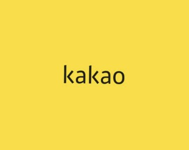

Projects
POCO: Coloring Poetry for Aesthetic Reading In progress
- A reading platform that pairs each poem with colors to support aesthetic reading
- Lets readers browse poems by color or by line, and collect them on a personal bookshelf
KoVox: A Digital Archive of Musical Performance Ephemera 2024.10 –
- Collected ephemera from over 1,700 Korean recitals covering 10 years
- Built a relational database with standardized entities
- Designed a digital archive framework and visualization
Critical and Creative Thinking through Digital Humanities 2024.03 –
- Helped develop the social reading annotation tool Semicolon
- Studied how social annotation supports collaborative learning
- SNU Creative Leading Young Researcher Support Program
Kakao Tech Ethics Report 2023 2023.07 – 2023.12
Kakao Corp. · 2023 카카오 공동체 기술윤리 보고서
- This report includes steps taken to self-check AI ethics policy.
Kakao Diversity Report 2023 2023.06 – 2023.10
Kakao Corp. · 2023 카카오 다양성 보고서
- This report outlines a number of activities to promote the value of diversity in the digital ecosystem.

ETRI Fashion Database Construction 2022.07 – 2022.08
- Built a zero-shot learning fashion database
- Created language interaction data for an AI fashion coordinator